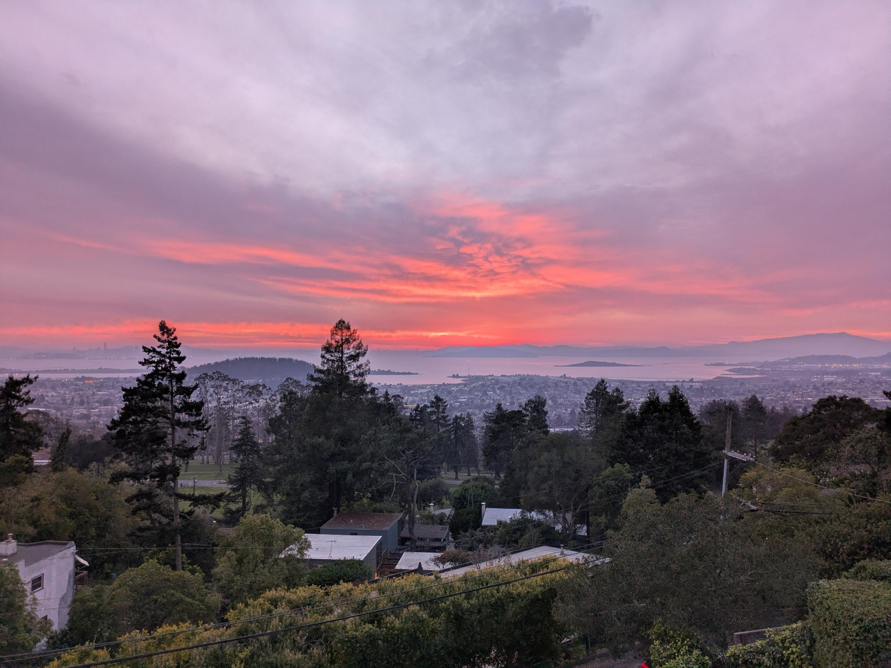
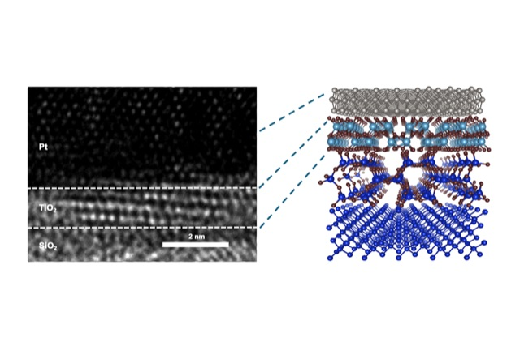
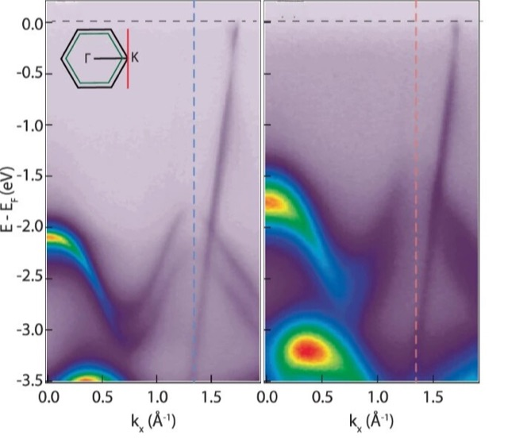
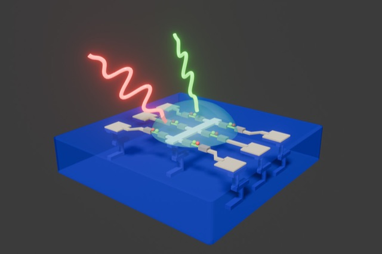
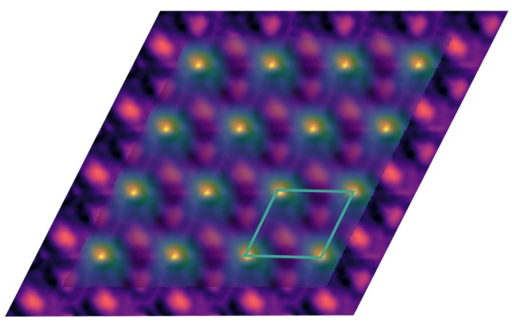
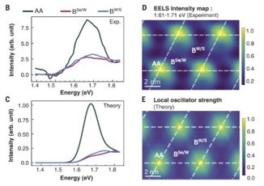
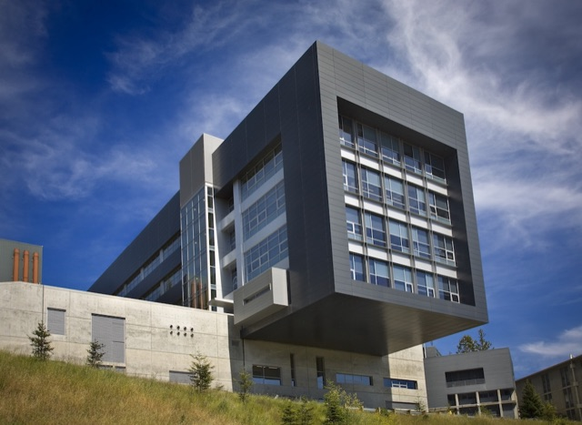
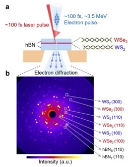

Painting potential landscapes on an atomically thin canvas
Archana Raja
Staff Scientist, Molecular Foundry Faculty, Kavli Energy NanoScience Institute Lawrence Berkeley National Laboratory
Light, electrons & quantum interfaces
We are a research group based at the Molecular Foundry and the Kavli Energy NanoScience Institute at Lawrence Berkeley National Laboratory, on the hill just minutes up from the UC Berkeley campus. Here we are surrounded by world-class synthesis, fabrication, and characterization facilities, including the National Center for Electron Microscopy and the Advanced Light Source. Bringing these capabilities together lets us build research workflows that exist almost nowhere else and use them to tackle major open problems. Our own research drives what we build and learn, and that in turn lets us help our collaborators and Foundry users push the boundaries of their science.
The nanoscale is inevitable now. As materials shrink, the local environment starts to template their properties. A single-atom defect or a slight twist across neighboring layers can shift energy levels and trap excitations. These same features steer how light, heat, charge, and spin carry energy and information, and how they convert from one to another. We use interfaces as our palette, painting potential landscapes into nanoscale quantum materials to create new electronic and optical functionality. We then use photons and electrons to watch what happens inside them.
Explore the lab
- PeopleArchana Raja, the group, and where our alumni went next.
- ResearchUltrafast nanoscale imaging, non-local screening and AI‑driven discovery.
- PublicationsEvery paper from the group, newest first.
- FacilitiesOptics labs and stackers, open to Foundry users.
- VisitShuttle, badge office and site access.
- JoinOpenings, life in the lab, and common questions.
Lab Updates
- Archana speaks on “Quantum Materials in the Age of AI: From 2D Heterostructures to Agentic Discovery” at the UC Berkeley Condensed Matter Seminar ↗ on October 26.
- Archana attends a DOE Genesis Mission PI meeting at UC Irvine on October 21.
- Ambipolar metal-insulator transition in bilayer MoSe₂ posted to arXiv with the Wang and Ma groups.
- Archana gives invited talks at Flatlands Beyond Graphene (Dresden) and the Bay Area Light Sources MeV-UED workshop.
- Sub-nanoscale visualization of reconstruction-driven moiré exciton localization posted to arXiv.
- Archana co-organizes Molecular Foundry User Meeting sessions on AI agents for materials science and photonic quantum technologies.
- Archana gives an invited talk on ultrafast electron diffraction of 2D heterojunctions at FOPS 2026 (Sugarbush, VT).
- Archana presents the poster “Can AI design its own hardware by observing our manipulation of energy landscapes?” at Revolutions in Science: Discovery, Imagination, and the Future, the National Academy of Sciences and Smithsonian symposium for America’s 250th (Washington, DC).
- Archana speaks at the 2D TMDs 2026 Symposium (NUS, Singapore) and the Los Alamos Institute for Materials Science.
- Postdoc Garima Gupta’s confined exciton polaron in MoS₂ on twisted hBN posted to arXiv with the Majumdar group.
- Archana gives the keynote at San Diego State’s Computational Science Research Center workshop.
- Archana moderates the session on AI-guided predictions of metastable materials at the National Academies workshop Frontiers of AI-Realized Metastable Materials (Washington, DC).
- Archana gives the Arizona State University physics colloquium on long-lived non-equilibrium phonons.
- “Advancing nanomaterials research in the legacy of Louis Brus,” with M. Y. Sfeir, published in the Journal of Chemical Physics.
- Archana gives an invited talk on visualizing energy transport at 2D semiconductor interfaces with ultrafast electron diffraction at Photonics West (San Francisco).
Featured Stories
All stories on foundry.lbl.gov →
Ferroelectricity Emerges at the Nanoscale
Separating an Electron into Waves of Spin and Charge
A New Approach to Efficient Optoelectronics, Inspired by the Human Eye- Foundry’s Raja and Safety Team Honored with Berkeley Lab Director’s Awards

Microscopy Images Could Lead to New Ways to Control Excitons for Quantum Computing
Hyperspectral imaging of exciton confinement within a moiré unit cell with a subnanometer electron probe
It’s Your Lab: Foundry Staff Describe How National User Facilities Democratize Access to Science
Ultrafast charge and energy transport across two-dimensional atomic junctions